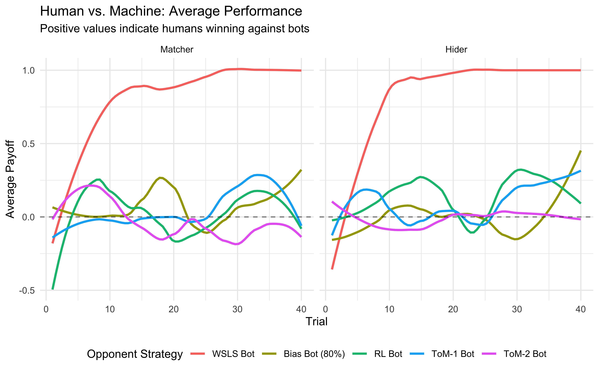
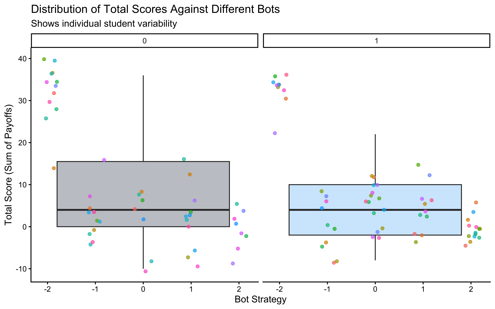

📍 Where we are in the Bayesian modeling workflow: Ch. 1 established what modeling means. Now we need something to model. This chapter gives us our cognitive task (Matching Pennies) and has us build theories in words — no code yet. These verbal models are the raw material that Ch. 3 translates into simulatable algorithms and Ch. 5 fits to real data.
You’ve just played Matching Pennies and discussed strategies with your classmates. You probably noticed patterns in your opponent’s play, tried to be unpredictable, and maybe even changed your strategy mid-game. This chapter helps you translate those observations and intuitions into the language of cognitive modeling—preparing you to implement formal models in Chapter 3.
3.1 Learning Objectives
This chapter bridges the gap between observing behavior and developing testable theories. By the end of this chapter, using the Matching Pennies game as a case study, you will be able to:
Identify Key Modeling Steps: Understand the process of moving from behavioral observations and participant reflections to formulating initial verbal theories of underlying cognitive strategies.
Appreciate Theory Building Challenges: Recognize common issues in theory development, such as the participant vs. researcher perspective, the need for simplification, and incorporating known cognitive constraints.
Conceptualize Learning Mechanisms: Propose distinct models (e.g., random choice, heuristics, RL) and organize them into a unified framework based on how they process prediction errors.
Connect to Formalization: Understand the “Update Rule” (\(\text{New} = \text{Old} + \text{Learning Rate} \times \text{Error}\)) as a universal grammar of learning that connects simple heuristics to complex cognitive strategies.
3.2 Introduction: Observing Behavior to Theorize Mechanisms
Chapter 1 emphasized the importance of modeling underlying generative mechanisms. To do this for cognition, we first need a behavior to explain. This chapter uses the Matching Pennies game as our initial cognitive phenomenon. It’s a simple strategic interaction, yet rich enough to illustrate the process of developing and refining cognitive models.
Our goal here is not yet to build the final computational models, but to practice the crucial preceding steps:
Observing behavior in a specific task (through experiments and data exploration).
Reflecting on potential cognitive strategies and constraints (drawing on observations, participant reports, and cognitive science principles).
Formulating initial verbal theories or candidate models that describe the potential underlying mechanisms.
This process lays the groundwork for Chapter 3, where we will translate these verbal ideas into precise, formal models ready for simulation and testing.
Why build verbal models before writing any code? Jumping straight to code forces you to make dozens of implicit decisions (What counts as a win? Does memory last 1 trial or 10?) without realizing you’re making them. Working through the verbal model first surfaces those hidden assumptions so you can make them deliberately. Every ambiguity you resolve here saves you a debugging session in Ch. 3.
3.3 The Matching Pennies Game
In the matching pennies game, two players engage in a series of choices. One player attempts to match the other’s choice, while the other player aims to achieve a mismatch, and they repeatedly play with each other. This is a prototypical example of interacting behaviors that are usually tackled by game theory, and bring up issues of theory of mind and recursivity.
For an introduction see the paper: Waade, Peter T., et al. “Introducing tomsup: Theory of mind simulations using Python.” Behavior Research Methods 55.5 (2023): 2197-2231.
For fun data involving different kinds of primates playing the game, see: Devaine, M., San-Galli, A., Trapanese, C., Bardino, G., Hano, C., Saint Jalme, M., … & Daunizeau, J. (2017). Reading wild minds: a computational assay of theory of mind sophistication across seven primate species. PLoS computational biology, 13(11), e1005833. The data is available in Assignment 2 (for the students at AU/CogSci).
3.4 Game Structure
The game proceeds as follows:
Two players sit facing each other
Each round, both players choose either “left” or “right” to indicate where they believe a penny is hidden
The matcher wins by choosing the same hand as their opponent
The hider wins by choosing the opposite hand
Points are awarded: +1 for winning, -1 (or 0, depending on the version) for losing
Repeat
This simple structure creates a rich environment for studying decision-making strategies, learning, and adaptation.
3.5 Empirical Investigation
3.5.1 Data Collection Protocol
[NOTES FOR FUTURE YEARS: MAYBE REPLACE WITH THE PRIMATE DATA?]
If you are attending my class you have been (or will be) asked to participate in a matching pennies game. This game provides the foundation for our modeling efforts. By observing gameplay and collecting data, we can develop models that capture the cognitive processes underlying decision-making in strategic situations.
Participants play 30 rounds as the matcher and 30 rounds as the hider, allowing us to observe behavior in both roles. While playing, participants track their scores, which can provide quantitative data for later analysis. Participants are also asked to reflect on their strategies and the strategies they believe their opponents are using, as that provides valuable materials to build models on.
3.5.2 Initial Observations
Through the careful observation and discussion of gameplay we do in class, several patterns typically emerge. For instance, players often demonstrate strategic adaptation, adjusting their choices based on their opponent’s previous moves. They may attempt to identify patterns in their opponent’s behavior while trying to make their own choices less predictable. The tension between exploitation of perceived patterns and maintenance of unpredictability creates fascinating dynamics for modeling.
3.6 Empirical explorations
Below you can observe how a previous year of CogSci did against bots (computational agents) playing according to different strategies. Look at the plots below, where the x axes indicate trial, the y axes how many points the CogSci’ers scored (0 being chance, negative means being completely owned by the bots, positive owning the bot) and the different colors indicate different strategies employed by the bots. Strategy “-2” was a Win-Stay-Lose-Shift bot: when it got a +1, it repeated its previous move (e.g. right if it had just played right), otherwise it would perform the opposite move (e.g. left if it had just played right). Strategy “-1” was a biased Nash both, playing “right” 80% of the time. Strategy “0” indicates a reinforcement learning bot; “1” a bot assuming you were playing according to a reinforcement learning strategy and trying to infer your learning and temperature parameters; “2” a bot assuming you were following strategy “1” and trying to accordingly infer your parameters.
library(tidyverse)# --- 1. Data Loading / Generation ---data_path <-file.path("data", "MP_MSc_CogSci22.csv")if (file.exists(data_path)) { d <-read_csv(data_path)} else {# Generate synthetic data if file is missing (Reproducibility check)set.seed(42) n_students <-20 n_trials <-30 strategies <-c(-2, -1, 0, 1, 2) d <-expand_grid(ID =factor(1:n_students),BotStrategy = strategies,Role =c(0, 1), # 0=Matcher, 1=HiderTrial =1:n_trials ) %>%mutate(# Random payoffs for demonstrationPayoff =sample(c(-1, 1), n(), replace =TRUE, prob =c(0.45, 0.55)) )warning("Using synthetic data for demonstration.")}# --- 2. Data Cleaning (Crucial Step!) ---# Map cryptic codes to human-readable labelsbot_labels <-c("-2"="WSLS Bot","-1"="Bias Bot (80%)","0"="RL Bot","1"="ToM-1 Bot","2"="ToM-2 Bot")d_clean <- d %>%mutate(# Make BotStrategy a factor with meaningful namesBotStrategy =factor(BotStrategy, levels =names(bot_labels), labels = bot_labels),# Make Role a factorRole =factor(Role, levels =c(0, 1), labels =c("Matcher", "Hider")) )# --- 3. Plot Collective Performance ---ggplot(d_clean, aes(x = Trial, y = Payoff, color = BotStrategy)) +geom_smooth(se =FALSE, method ="loess", span =0.5) +geom_hline(yintercept =0, linetype ="dashed", alpha =0.5) +facet_wrap(~Role) +labs(title ="Human vs. Machine: Average Performance",subtitle ="Positive values indicate humans winning against bots",y ="Average Payoff",color ="Opponent Strategy" ) +theme_minimal() +theme(legend.position ="bottom")

That doesn’t look too good, ah? What about individual variability? In the plot below we indicate the score of each of the former students, against the different bots.
# --- Plot 2: Individual Variability in Scores ---# Calculate the total score for each student (ID) against each bot strategy.d_summary <- d %>%group_by(ID, BotStrategy, Role) %>%# Group by student, bot, and rolesummarize(TotalScore =sum(Payoff), .groups ="drop") # Calculate total score# Visualize the distribution of total scores for each bot strategy.# geom_boxplot shows the distribution, geom_point shows individual student scores.print(ggplot(d_summary, aes(x = BotStrategy, y = TotalScore)) +geom_boxplot(aes(fill = Role), alpha =0.3, outlier.shape =NA) +# Boxplot showing distributiongeom_jitter(aes(color = ID), width =0.2, alpha =0.7) +# Individual student pointsfacet_wrap(~Role) +# Separate plots for Matcher and Hiderlabs(title ="Distribution of Total Scores Against Different Bots",subtitle ="Shows individual student variability",x ="Bot Strategy",y ="Total Score (Sum of Payoffs)",fill ="Player Role" ) +theme_classic() +theme(legend.position ="none") # Hide legend for individual IDs)

3.6.1 From Observation to Theory: Identifying Potential Mechanisms
The plots above reveal patterns: average performance changes over time, varies by opponent, and differs across individuals. Gameplay observations and participant reflections (from class discussion or collected data) add qualitative insights – perhaps players mention trying to be unpredictable, guessing opponent biases, or repeating winning moves.
The crucial next step is to distill these rich, complex observations into simplified, plausible mechanisms or strategies. This involves abstraction:
Identifying Core Patterns: What recurring behaviors seem most important? (e.g., reacting to wins/losses, tracking opponent frequencies).
Simplifying: Can we capture the essence of a strategy without modeling every detail of a player’s thought process or interaction? (e.g., modeling just previous behaviors as possible inputs, instead of complex patterns in face expressions or movements that real humans likely use when trying to guess which hand has the penny).
Drawing on Cognitive Principles: How do known cognitive constraints (like limited memory or processing errors) shape plausible strategies?
For instance, observing that players often change their choice after a loss might lead us to propose a “If Lose Then Shift” component as part of a candidate model. Observing that performance differs against biased vs. adaptive bots suggests players might be trying to learn or adapt, leading to memory-based or learning models.
This process generates verbal models – initial hypotheses about the strategies at play. Key modeling considerations guide this translation:
What information do players likely use? (Own past choices? Opponent’s choices? Payoffs?)
How far back does memory plausibly extend? (Last trial? Last 5 trials? Exponential decay?)
What is the role of randomness? (True randomness? Exploration? Implementation errors?)
How might strategies adapt over time or differ between individuals?
Answering these helps refine our verbal models, paving the way for formalization. The goal isn’t to capture everything, but to propose distinct, testable mechanisms.
3.6.2 The distinction between participant and researcher perspectives
As participants we might not be aware of the strategy we use, or we might believe something erroneous. The exercise here is to act as researchers: what are the principles underlying the participants’ behaviors, no matter what the participants know or believe? Note that talking to participants and being participants helps developing ideas, but it’s not the end point of the process. Also note that as cognitive scientists we can rely on what we have learned about cognitive processes (e.g. memory).
Another important component of the distinction is that participants leave in a rich world: they rely on facial expressions and bodily posture, the switch strategies, etc. On the other hand, the researcher is trying to identify one or few at most “simple” strategies. Rich bodily interactions and mixtures or sequences of multiple strategies are not a good place to start modeling. These aspects are a poor starting point for building your first model, and are often pretty difficult to fit to empirical data. Nevertheless, they are important intuitions that the researcher should (eventually?) accommodate.
3.7 Candidate Models: A Hierarchy of Cognitive Complexity
Based on behavioral observations and cognitive principles, the many discussions in class during the years have advanced a variety of models, which I’m here organizing into a hierarchy based on their conception of learning. We start with simple agents that ignore history, move to learning agents that track first average outcomes, then also uncertainty and volatility, and conclude with strategic agents that model the opponent’s mind. To make their conceptual continuity more explicit, I couldn’t resist adding some discussion of the math behind the verbal intuitions and pointing to how each model can be recast in terms of an update rule: \[\text{New Belief} = \text{Old Belief} + \text{Learning Rate} \cdot \text{Predictive Error}\]. This format unifies the different models under a common mathematical framework, making it easier to understand their relationships and differences.
Also note that in the formula below, ‘Belief’ is a placeholder. If we are modeling a coin flipper, the belief is a probability (\(\theta\)). If we are modeling betting, it might be an expected reward value (\(V\)). If we are modeling playing strategies, it might be a prediction of the opponent’s move. As it should be obvious, those are partially overlapping conceptualizations.
3.7.1 Level 0: The Static Agent (No Learning)
The simplest assumption is that the agent does not learn or adapt to the opponent at all. They simply act according to a fixed internal preference.
3.7.2 The Biased Agent (Random Choice):
Concept: The agent is a biased coin flipper. They have a static preference (e.g., “I generally prefer Right”) that does not change over time.
Traditional Formulation (Bernoulli Process): We model the choice \(y_t\) at trial \(t\) as a draw from a Bernoulli distribution with a fixed rate parameter \(\theta\): \[y_t \sim \text{Bernoulli}(\theta)\]
The “Update” Rule: Because this agent is static, there is no update rule, in other words, a learning of 0. The parameter \(\theta\) remains constant regardless of wins or losses. \[\theta_{t+1} = \theta_{t} + \text{Learning Rate} \cdot \text{Predictive Error}\] where \(\text{Learning Rate} = 0\) and therefore the formula reduces to \[\theta_{t+1} = \theta_{t}\].
Variable Definitions:
\(y_t \in \{0, 1\}\): The choice (e.g., Left/Right).
\(\theta \in [0, 1]\): The fixed probability of choosing 1 (bias).
Looking Ahead: This model might seem too simple to be useful, but never underestimate the power of null models! In a study using k-ToM models (see below), we realized that for k = 6 or above, the model behaved in a way that was practically indistinguishabe from a biased agent. Also, a simple model allows us to build skills in reasonable steps. In the next chapter, we will write code to simulate data according to these models and in the following chapter, we will then learn how to take a sequence of choices and mathematically work backwards to find the most likely value of the model parameters. In all these cases, being able to start with a simple model is crucial to build intuition and skills before moving to more complex models.
[FIND REF OF PAPER USING THIS]
3.7.3 Level 1: Heuristics & The Immediate Past
The next step up is an agent that learns minimally: it reacts to feedback but has a “memory” of only one trial.
3.7.3.1 Deterministic Win-Stay-Lose-Shift (WSLS):
Concept: A rigid heuristic: “If I won, I do the same thing. If I lost, I switch.” This can be viewed as an agent with zero memory who effectively “re-learns” the world from scratch after every single feedback.
The “Update” Rule: We can treat the “Probability of Staying” (\(P_{stay}\)) as a value that is updated trial-by-trial.\[P_{stay, t+1} = P_{stay, t} + \text{Learning Rate} \cdot (Outcome_t - P_{stay, t})\] Where \(\text{Learning Rate} = 1\). Because the agent learns instantly from the immediate past, the formula reduces to: \[P_{stay, t+1} = P_{stay, t} + 1 \cdot (Outcome_t - P_{stay, t})\]\[P_{stay, t+1} = Outcome_t\]
Implication: If the outcome was a Win (\(1\)), the probability of staying becomes \(1\). If the outcome was a Loss (\(0\)), the probability of staying becomes \(0\). This mathematically formalizes the idea of “instant forgetting.”
Variable Definitions:\(outcome_{t-1}\): \(outcome_{t-1} \in \{0, 1\}\): The feedback from the previous trial, where 1 = Win and 0 = Loss
Note: The Physics View (Ising Formulation) [only for nerds]: While we typically code choices as 0/1 for logistic regression, physicists and network theorists often code binary states as “spins”: -1 (Left) and +1 (Right). If we also code the outcome as -1 (Loss) and +1 (Win), the WSLS update rule becomes mathematically elegant: \[y_t = outcome_{t-1} \cdot y_{t-1}\] Why does this work? If Win (+1): The equation becomes \(y_t = 1 \cdot y_{t-1}\). The sign stays the same (Stay). If Loss (-1): The equation becomes \(y_t = -1 \cdot y_{t-1}\). The sign flips (Shift). This formulation highlights that “shifting” is mathematically equivalent to sign inversion. This connects cognitive shifting to “spin glass” or ising models in physics (e.g., Stephens & Bialek, 2010), and is useful to know of it as it sometimes simplifies the mathematical equations of your models.
Concept: We relax the strict rule. The agent is more likely to stay after a win and shift after a loss, but real behavior is noisy (stochastic, probabilistic).
Traditional Formulation (GLM): We define the probability of “staying” (\(P_{stay}\)) as a function of the previous outcome using a logistic curve. \[P(stay_t) = \text{logit}^{-1}(\beta_0 + \beta_1 \cdot outcome_{t-1})\]. Note that we can think of the reactions to feedback as symmetric (probability of staying when winning equal to the possibility of shifting when losing), or asymmetric (e.g. the agent might be more sensitive to losses than wins, or vice versa). In the latter case, we’d have an equation like: \[P(stay_t) = \text{logit}^{-1}(\beta_0 + \beta_1 \cdot win_{t-1} + \beta_2 \cdot loss_{t-1})\]
The “Update” Rule: To fit our hierarchy, we treat the agent’s internal Decision Value (\(Q\)) as the state being updated.\[Q_{t+1} = Q_{t} + \text{Learning Rate} \cdot (\text{Target}_t - Q_{t})\]Where \(\text{Learning Rate} = 1\) (Instant Update) and the Target is the weighted outcome (\(\beta_0 + \beta_1 \cdot outcome_t\)).Reduction:\[Q_{t+1} = \beta_0 + \beta_1 \cdot outcome_t\]Implication: Just like the Deterministic agent, this agent “forgets” the distant past instantly. However, a “Win” does not guarantee a Stay (\(P=1\)); it simply pushes the decision value to a high—but not infinite—number.
Variable Definitions:
\(Q\): The internal log-odds of staying.
\(\text{logit}^{-1}(x) = \frac{1}{1+e^{-x}}\): The sigmoid function mapping value to probability.
\(\beta_1\): Sensitivity to feedback. High \(\beta_1\) approximates the deterministic heuristic; \(\beta_1 \approx 0\) implies the agent ignores feedback.
[FIND REF OF PAPER USING THIS e.g., Zhang & Lee, 2010; Worthy et al., 2013]
3.7.4 Level 2: Integrating History (The Moving Average)
Real agents usually care about more than just the last trial. They integrate history over time to form an expectation.
3.7.4.1 The Moving Average (Windowed Memory):
Concept: “I think the future will look like the average of the recent past.”
Traditional Formulation (Batch Average): \[V_{t} = \frac{1}{N} \sum_{i=0}^{N-1} Outcome_{t-i}\]
Transformation to Update Rule: To avoid recalculating the sum from scratch, we can update the average by adding the new outcome and removing the oldest outcome.\[V_{t} = V_{t-1} + \frac{1}{N} \cdot (Outcome_{t} - Outcome_{t-N})\]
Critique (The Memory Problem): This formulation reveals a massive cognitive cost. To perform this update, the agent cannot just store the current average (\(V_{t-1}\)); they must remember exactly what happened \(N\) trials ago (\(Outcome_{t-N}\)) to “remove” it from the sum. Further, a memory from 10 trials ago is recalled perfectly, but a memory from 11 trials ago vanishes instantly. This is biologically implausible.
The Mismatch: This does not fit the standard “Prediction Error” update rule. It compares the new reality (\(Outcome_t\)) to the oldest reality (\(Outcome_{t-N}\)), rather than comparing reality to expectation.
Variable Definitions:
\(V_t\): The estimated value (probability of winning/Right) at trial \(t\).
\(N\): The window size (e.g., 10 trials).
\(Outcome_t \in \{0, 1\}\): The outcome at trial \(t\).
3.7.5 Level 3: A more elegant memory decay mechanism
Reinforcement Learning (RL) is mathematically the elegant solution to the Moving Average’s memory problem. It replaces the “perfect memory of \(N\) trials” with a “fading memory of everything”.
3.7.5.1 From Moving Average to Reinforcement Learning (Rescorla-Wagner):
How do we fix the memory problem in Level 2? The agent cannot remember the specific outcome \(Outcome_{t-N}\). So, they make a guess: “The outcome \(N\) trials ago was probably similar to my current average value.” Mathematically, we substitute \(Outcome_{t-N} \approx V_{t-1}\). \[V_{t} = V_{t-1} + \frac{1}{N} (Outcome_{t} - \mathbf{V_{t-1}})\] If we rename \(\frac{1}{N}\) to \(\alpha\) (alpha), we get the standard RL rule.
Note that the update rule only applies to the value of the action that was actually taken. For instance, if we are modeling the value of picking “Right”, the outcome should be 1 if we picked “Right” and won, 0 if we picked “Right” and lost, and it should not be updated at all if we picked “Left”. In the context of the matching pennies we can assume that increased expected value for left will go hand in hand with decreased expected value for right (and so when the participant chooses “Left”, use \(1-Outcome\) to update the value of “Right”).
“Traditional Formulation (Exponential Weighted Average): Instead of a sum over \(N\), value is a weighted sum of all past history, where weights decay geometrically. \[V_{t} = (1-\alpha) \cdot V_{t-1} + \alpha \cdot Reward_{t}\]
Transformation to Update Rule (The Delta Rule): By rearranging terms, we get the update format I used as template for all models: \[V_{t} = V_{t-1} + \alpha \cdot (Reward_{t} - V_{t-1})\]
Why is this “Learning”? The term \((Reward_{t} - V_{t-1})\) is the Prediction Error (PE). The agent compares reality (\(Reward\)) to their expectation (\(V\)) and nudges their belief by a step size \(\alpha\).
Variable Definitions:
\(V_t\): The estimated value (e.g., probability of win) at trial \(t\).
\(\alpha \in [0, 1]\): The Learning Rate. High \(\alpha\) = fast forgetting; Low \(\alpha\) = long memory.
\(PE\): The difference between what happened and what was expected.
3.7.6 Level 4: The Bayesian Update (Static Uncertainty)
In RL, the learning rate \(\alpha\) is a fixed number. In Bayesian inference, the “learning rate” becomes adaptive based on uncertainty.
Concept: The agent tracks not just the value, but the uncertainty in estimating that value. They weigh new evidence against their prior belief based on how noisy the evidence is versus how solid their prior is.
Traditional Formulation: We combine a Prior distribution (\(\mathcal{N}(\mu_{prior}, \sigma^2_{prior})\)) with Likelihood (\(\mathcal{N}(Outcome, \sigma^2_{noise})\)) to get a Posterior.\[\text{Posterior Mean} = \frac{\sigma^2_{noise}\mu_{t-1} + \sigma^2_{t-1}Outcome_t}{\sigma^2_{noise} + \sigma^2_{t-1}}\]
Transformation to Update Rule (Kalman Gain): With some algebra, we can rearrange the posterior mean into our standard “Update + Error” format.\[\mu_{t} = \mu_{t-1} + K_t \cdot (Outcome_t - \mu_{t-1})\] Here, \(K\), what we called learning rate is often called \(Kalman Gain\): \[K_t = \frac{\sigma^{2}_{t-1}}{\sigma^{2}_{t-1} + \sigma^{2}_{noise}}\]
Variable Definitions:
\(\mu_t\): The estimated value (mean belief) at trial \(t\).
\(\sigma^2_{t-1}\): The uncertainty of the agent’s belief before seeing the outcome (Prior Variance).
\(\sigma^2_{noise}\): The uncertainty/noise of the environment (Likelihood Variance).
\(Outcome_t\): The observation at trial \(t\).
Critique (The Stopping Problem):
The Match: This looks exactly like RL, where \(K_t\) replaces \(\alpha\).
The Difference: In this model, the uncertainty \(\sigma^2_{t-1}\) decreases after every observation (the agent gets more confident). As \(\sigma^2_{t-1} \to 0\), the gain \(K_t \to 0\).
Implication: The agent eventually stops learning because they become “sure” they know the truth. This is optimal for static worlds, but disastrous if the opponent changes strategy.
3.7.7 Level 5: The Kalman Filter (Dynamic Uncertainty)
Real environments change (volatility). The Kalman Filter extends the Bayesian update by adding a Prediction Step that prevents the agent from becoming “too sure.”
Concept: “The world is not static; it drifts. Even if I was sure yesterday, my knowledge has degraded by today.”
Traditional Formulation (State Space Model): We assume the true hidden value (\(x\)) drifts over time, and that our observations (\(y\)) are noisy versions of that drifting value. \[x_t = x_{t-1} + w_t, \quad w_t \sim \mathcal{N}(0, Q)\]\[y_t = x_t + v_t, \quad v_t \sim \mathcal{N}(0, R)\]
Transformation to Update Rule (Two-Step Process): Unlike the static Bayesian agent, the Kalman agent “inflates” their uncertainty before looking at the data.
Predict (Inflate Uncertainty): Before seeing data, the agent assumes the world might have changed. They add Process Noise (\(Q\)) to their existing uncertainty. \[\sigma^2_{prediction} = \sigma^2_{previous} + Q\]
Calculate Gain: The “Learning Rate” (\(K_t\)) is calculated using this inflated uncertainty.\[K_{t} = \frac{\sigma^2_{prediction}}{\sigma^2_{prediction} + R}\]
Update (The Standard Rule): Finally, we apply the standard error-correction rule. \[\mu_{t} = \mu_{t-1} + K_t \cdot (Outcome_t - \mu_{t-1})\]
Variable Definitions:
\(Q\): Process Noise (Volatility). The variance of the drift \(w_t\). High \(Q\) means the world changes largely/frequently.
\(R\): Measurement Noise (Observation Uncertainty). Equivalent to \(\sigma^2_{noise}\) in Level 4.
\(\mu_t\): The agent’s estimate of the true state \(x_t\).
\(\sigma^2_{prediction}\): The agent’s uncertainty after accounting for volatility but before seeing the new outcome.
Why this fixes the “Stopping Problem”: In Level 4, \(\sigma^2\) shrank to zero, causing learning to stop. Here, because we add \(Q\) at every step, \(\sigma^2_{prediction}\) never hits zero. Consequently, the learning rate \(K_t\) never hits zero. It settles at a dynamic equilibrium—a sweet spot where the agent stays permanently “alert” to changes without over-reacting to noise.
3.7.8 Level 6: The Hierarchical Gaussian Filter (Meta-Learning)
The Kalman Filter assumes the volatility (\(Q\)) is constant. But what if the opponent plays steadily for 20 rounds, then suddenly starts switching wildly? The HGF introduces a hierarchy to track this.
Concept:
Level 1 (\(x_1\)): The value of the stimulus (e.g., probability of “Right”).
Level 2 (\(x_2\)): The volatility of Level 1.
N.B. we could build more levels (e.g. level 3 would be the meta-volatility, the model belief of how fast to update estimates of volatility)
Transformation to Update Rule (Volatile Learning Rates): The update rule for Level 1 looks standard, but the Learning Rate is now a function of Level 2.\[\mu_{1,t} = \mu_{1,t-1} + K_1 \cdot (Outcome_t - \mu_{1,t-1})\] Where the Gain \(K_1\) depends on the volatility estimate from Level 2:\[K_1 \approx \frac{\exp(\mu_{2})}{\exp(\mu_{2}) + \sigma^2_{noise}}\]
\(\exp(\mu_2)\): The “phasic volatility”—how much the agent expects the world to change right now.
Implication:
If Level 2 detects high volatility (\(x_2 \uparrow\)), the learning rate \(K_1\) spikes \(\to 1\).
If Level 2 detects stability (\(x_2 \downarrow\)), the learning rate \(K_1\) drops \(\to 0\).
Meta-Learning: The agent is not just learning the value; they are learning how fast to learn.
Looking Ahead: This model represents the current state-of-the-art in “Ideal Observer” models and has had many interesting applications in cognitive neurosciences (REFS). While the math for inverting this model (Variational Bayes) is complex, the intuition is simple: it is a dynamic learning rate manager. Future chapters (not yet written) might explore the model and its implications and limitations.
3.7.9 Level 7: Recursive Strategies (Theory of Mind)
Here is the revised and expanded text for the final sections. I have aligned Level 7 (ToM) with the “Update Rule” framework by clarifying that while the decision is recursive, the learning is a Bayesian update of the opponent’s parameters. I also kept the Mixture Models section as a necessary pedagogical conclusion.
Level 7: Recursive Strategies (Theory of Mind)
Finally, we move from learning about the environment to learning about the agent. This is Theory of Mind (ToM). In our framework, this is formally framed as Recursive Bayesian Learning.
Concept: The agent (\(k\)-ToM) does not simply track the pattern of outcomes; they attempt to track the opponent’s hidden strategy.
A 0-ToM agent is a simple learner (e.g., the Biased Agent or RL).
A 1-ToM agent simulates a 0-ToM opponent. They ask: “If I were a simple learner observing this history, what would I play next?”
A 2-ToM agent simulates a 1-ToM opponent. They ask: “What does the opponent think I will do?”
Traditional Formulation (Recursive Simulation): The agent holds a “shadow model” of the opponent. If I am Level \(k\), I assume my opponent is Level \(k-1\). I feed the game history into my internal simulation of them to predict their next move probability (\(\hat{p}_{op}\)).
Update Rule (Bayesian Meta-Learning): Unlike RL, where we update a simple value \(V\), here we update the parameters of the simulated opponent. \[\text{OpponentModel}_{new} = \text{OpponentModel}_{old} + \text{Learning Rate} \cdot (\text{Prediction Error})\]
Specifics: If I am 1-ToM modeling a 0-ToM opponent (Bias), I use a Bayesian update to refine my estimate of their bias \(\theta\).
Decision Value: Once the opponent model is updated, the value of my action \(a\) is derived from their predicted move: \[V_{k}(a) \propto P(\text{Opponent plays } \hat{a}_{op} | \text{Opponent is } k-1)\]
Variable Definitions:
\(k\): The sophistication level. \(k=0\) is the baseline; \(k=1\) is strategic; \(k=2\) is meta-strategic.
\(\hat{a}_{op}\): The predicted action of the opponent.(Ref: Devaine, et al., 2014; Waade et al., 2023)
3.7.10 Handling Heterogeneity: Mixture Models
Real behavior is rarely pure. A player might be “Random” when tired but “Strategic” when focused. Or they might switch strategies to confuse the opponent.
Concept: We assume the data is not generated by one single model, but by a probabilistic blend of several.
Traditional Formulation (The Weighted Likelihood): The likelihood of the observed data \(D\) is the weighted sum of the likelihoods from \(M\) different candidate strategies. \[P(D | \Theta) = \sum_{m=1}^{M} w_m \cdot P(D | \text{Model}_m, \theta_m)\]
Variable Definitions:\(w_m\): The mixing weight (e.g., 70% RL, 30% Random). Note that \(\sum w_m = 1\).\(P(D|\text{Model}_m)\): How well the specific strategy (e.g., RL) explains the data.
Critique (The Complexity Trap): While realistic, these models are hard to fit. If we allow an agent to switch between 5 different strategies at any moment, the possible combinations of parameter values explaining the same patterns of behavior could explode, making the model underdefined for the data. Sometimes one can be lucky and integrate the “mixed” models into one equation (see an example here: https://betanalpha.github.io/assets/chapters_html/reading_times.html)
3.7.11 Plausibility Check: Cognitive Constraints
You probably noticed you couldn’t remember every single move your opponent made. Maybe you lost track of older trials, and recent trials felt more important. These aren’t failures: they’re features of human cognition. Our models should reflect these constraints to be cognitively realistic. Let’s see what difference these constraints make for predictions.
3.7.11.1 Memory Limitations
Constraint: Humans have limited working memory and exhibit forgetting, often approximated by exponential decay. Perfect recall of long trial sequences is unrealistic.
Modeling Implication: This favors models incorporating memory decay or finite history windows (like imperfect memory models or RL with a learning rate < 1) over perfect memory models. It suggests that even bias-tracking models should discount older information.
3.7.11.2 Perseveration Tendencies
Constraint: People sometimes exhibit perseveration – repeating a previous action, especially if it was recently successful or chosen, even if a different strategy might suggest otherwise. This can be distinct from rational “win-stay”.
Modeling Implication: This might be incorporated as an additional bias parameter influencing the choice probability (e.g., a small added probability of repeating the last action \(a_{t-1}\) regardless of outcome) or interact with feedback processing (e.g., strengthening the ‘stay’ tendency after wins).
3.7.11.3 Noise and Errors
Constraint: Human behavior is inherently noisy. People make mistakes, have attentional lapses, press the wrong button, or misunderstand feedback. Behavior rarely perfectly matches a deterministic strategy.
Modeling Implication: Models should almost always include a “noise” component. This can be implemented in several ways:
Lapse Rate: A probability (e.g., \(\epsilon\)) that on any given trial, the agent makes a random choice instead of following their primary strategy (as used in the Mixture Model chapter).
Decision Noise (Softmax): In models where choices are based on comparing values (like RL), a ‘temperature’ parameter can control the stochasticity. High temperature leads to more random choices, low temperature leads to more deterministic choices based on values.
Imperfect Heuristics: Parameters within a strategy might reflect imperfect application (e.g., in WSLS, \(p_{stay\_win} < 1\) or \(p_{shift\_loss} < 1\)). This can also capture asymmetric responses to feedback (e.g., being more likely to shift after a loss than stay after a win).
Exploration: Note that we talked about noise and errors, but random deviations can also be framed as adaptive exploration, allowing the agent to test actions that their current strategy deems suboptimal.
3.7.11.4 A Note on Ideal Observers
It is important to distinguish between Heuristic Models (like WSLS) and Ideal Observer Models (like the Kalman Filter or HGF). Heuristics attempt to describe the process a human uses. Ideal observers describe the optimal computation given the uncertainty. When we fit models like the HGF to human data, we are effectively asking: “In what specific ways does the human deviate from optimality?” (e.g., do they overestimate how volatile the opponent is?).
3.7.12 Relationships Between Models
It’s useful to note that these candidate models aren’t always entirely distinct. Often, simpler models emerge as special cases of more complex ones:
A Random Choice model is like a Memory-Based model where the influence of memory is zero.
WSLS can be seen as a specific type of RL model with a very high learning rate and sensitivity only to the immediately preceding trial’s outcome.
A 0-ToM model might resemble a Bias Tracking (moving average or RL model).
Recognizing these connections can guide a principled modeling approach, starting simple and adding complexity only as needed and justified by data or theory.
This is what we called “model nesting” in a future chapter. It’s very elegant in that it allows to directly compare several models in a non-exclusive fashion, simply based on parameter values. A good example is also provided in Betancourt’s case study on reading times: https://betanalpha.github.io/assets/chapters_html/reading_times.html
3.7.13 Handling Heterogeneity: Mixture Models
Sometimes the models cannot be nested, or we might want to capture the possibility that different participants (or even the same participant at different times) use different strategies. For instance, some players might predominantly use WSLS, while others rely more on bias tracking (moving average or RL). This is where mixture models become relevant (explored in detail in a future chapter).
Concept: Instead of assuming one model generated all the data, a mixture model assumes the data is a probabilistic blend from multiple candidate models (e.g., 70% of choices from WSLS, 30% from Random Bias).
Purpose: Allows capturing heterogeneity within or across individuals without needing to know a priori which strategy was used on which trial or by which person. The model estimates the probability that each data point came from each component strategy.
Challenge: Mixture models often require substantial data to reliably distinguish between components and estimate their mixing proportions.
3.7.14 Cognitive Modeling vs. Traditional Statistical Approaches (e.g., GLM)
How does this modeling approach differ from standard statistical analyses you might have learned, like ANOVAs or the General Linear Model - GLM?
Focus: GLM approaches typically focus on identifying statistical effects: Does factor X significantly influence outcome Y? (e.g., Does the opponent’s strategy affect the player’s win rate?). Cognitive modeling focuses on identifying the underlying process or mechanism: How does the opponent’s strategy lead to changes in the player’s choices via specific computations (like learning, memory updating, or strategic reasoning)?
Theory: Cognitive models are usually derived from theories about mental processes. GLMs are more general statistical tools, often used agnostically regarding the specific cognitive mechanism.
Parameters: Cognitive models estimate parameters that often have direct psychological interpretations (e.g., learning rate, memory decay, decision threshold, bias weight). GLM parameters represent statistical associations (e.g., regression coefficients).
Data Level: Cognitive models often predict behavior at the trial level (e.g., predicting the choice on trial t based on history up to t-1). GLM analyses often aggregate data (e.g., comparing average win rates across conditions).
Prediction vs. Explanation: While both aim to explain data, cognitive modeling often places a stronger emphasis on generating the observed behavior pattern from the hypothesized mechanism, allowing for simulation and prediction of fine-grained details.
Example Revisited: In the Matching Pennies game: * A GLM approach might test if Payoff ~ BotStrategy * Role + (1|ID) shows a significant effect of BotStrategy. * A cognitive modeling approach would fit different strategy models (WSLS, RL, etc.) to the choice data and compare them (using methods from Ch 7) to see which mechanism best explains the choices made against different bots, potentially revealing why performance differs (e.g., due to changes in estimated learning rates or strategy weights).
Both approaches are valuable, but cognitive modeling aims for a deeper, mechanistic level of explanation about the underlying cognitive processes.
3.8 Conclusion: From Observations to Verbal Theories
This chapter took us from observing behavior in a specific task – the Matching Pennies game – to the crucial stage of formulating initial theories about the cognitive processes involved. We explored how analyzing gameplay data, considering participant reports, applying cognitive principles (like memory limits and error proneness), and contrasting different potential strategies (Random, WSLS, Memory-based, RL, k-ToM) helps us generate plausible verbal models.
We saw that the path from raw behavior to a testable model involves significant abstraction and simplification. We also highlighted the importance of distinguishing between the participant’s experience and the researcher’s theoretical stance, and how cognitive modeling differs from traditional statistical approaches by focusing on underlying mechanisms.
You now have a conceptual map of candidate models and understand why cognitive constraints matter. But verbal descriptions like ‘win-stay-lose-shift’ hide crucial ambiguities: Does ‘stay’ mean always stay or usually stay? How do we handle the first trial? In Chapter 3, you’ll implement these models in code, forcing you to make every assumption explicit. This is where modeling becomes rigorous and often reveals that our verbal intuitions were vaguer than we thought.
The next chapter, “From verbal descriptions to formal models,” tackles exactly this challenge. We will take some of the candidate models discussed here (like Random Choice and WSLS) and translate them into precise mathematical algorithms and R functions. This formalization will force us to be explicit about our assumptions and enable us to simulate agent behavior. That simulation is itself a prerequisite: in Ch. 5 we flip the direction of the pipeline — instead of generating data from known parameters, we will infer parameters from observed data. And in Ch. 6, before we trust any of those estimates, we will put the entire inference procedure through a rigorous validation battery.